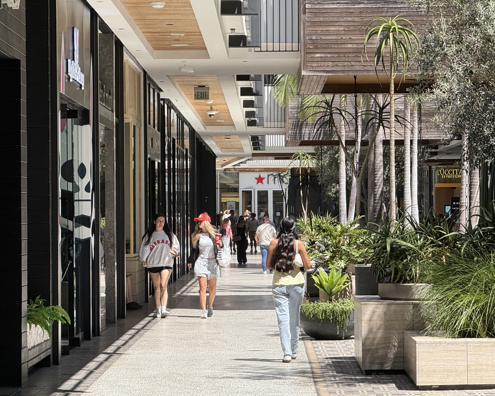

Project 0: Becoming Friends with Your Camera
This project is ...
Part 1 — Focal Length Selfie Comparison
14mm
24mm
35mm
48mm
120mm
Part 2 — Street Scene Comparison

145mm (far)

24mm
Part 3 — Dolly Zoom

Dolly zoom GIF